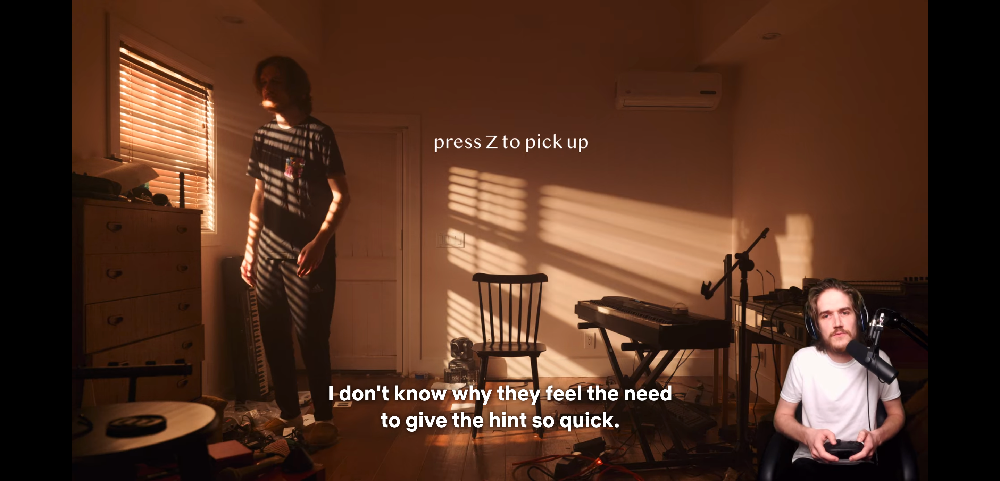

Introduction
Write a short introduction, a short paragraph, giving a bit more detail about what the project is.
Concept and Background Research
I wanted to use this project to get familiar with 3d and AR, so I started thinking about how to interact from the technical perspective.
Inspired by a comedy piece by bo burnham[1], in which he interacts with himself as an in-game character on a controller.
Of course, the interaction doesn't actually happen, but through video editing, the audience can see him in a space between reality and virtuality, which is an interesting viewing experience.
In AR, there is a mix of reality and virtuality. In the devices I currently have, there are three entities involved in the interaction: people, devices (phones, tablets, etc.), and virtual objects. Normally, people interact with virtual objects through devices, but I want to try to participate directly in the reality of AR and interact directly with the virtual objects in AR, even though the interaction itself will not actually happen. The audience can watch the interaction between the real me and the virtual objects on the screen, expressing and recording emotions and stories in this way.
The final product is a pseudo-documentary video of me, consisting of several small stories. From the audience's perspective, I am a role player in the video. I conceive the stories from the things around me and the 3D models I can find, thinking about what the models are, how to use them, and how to fill the real space, and how I can interact with these models. The following small stories make up the final product:
- I really like Pringles: A story about my obsession with Pringles, but I can only afford one.
- I think I need a dog: A story about being too lonely and needing a virtual dog, but never getting a response from it.
The audience sees me interacting with the virtual objects, making it difficult to tell whether it's real or virtual, but it requires higher technical expertise. The audience sees me trying to interact with the virtual objects, but not getting a response. Both of these narratives are possible, but due to time constraints, I choose the second one.
Technical Implementation

Presentation of the work:
The final form of presentation for the work is a video, which is recorded from the screen of the AR device. However, screen recording always results in low video quality. To improve the video quality as much as possible, I tried the following three methods:
- Recording the screen with a phone
- Connecting the phone to a computer and recording the phone screen on the computer
- Recording the screen with an iPad Pro
In the end, the video recorded with the third method was the clearest. Therefore, I decided to use an iPad Pro as the AR device.
Technical Development:
I started from the AR drag example provided by three.js[2].
There are two main ways to manipulate virtual elements in this project: selecting and dragging, and zooming in and out. This allowed me to place the imported 3D models in the desired location at a suitable size.
Firstly, the dragging function was already available, but there was no pinchmove event in the gesture listener events provided by WebXR. Although it is possible to determine the pinchmove event based on the squeeze event, it is not easy to squeeze on the selected AR device, which is an iPad Pro. Therefore, I had to look for other solutions.

Reflection and Future Development
In this project, I try to distinguish between treating technology as a goal and treating technology as a tool. In previous projects, I often mistakenly treated technology as a goal, which limited my creative process. I am learning to think about how to tell stories through video editing.
The recorded screen has low pixel resolution, and the final product cannot be played on a clearer screen. There are two reasons for this: 1. Limited screen size 2. The webcam itself has low pixel resolution and cannot access a high-resolution native camera.
I am searching for solutions to the problem of low webcam pixel resolution and exploring methods of storytelling that do not rely on screen recording.
Currently, my content consists of independent and unrelated short stories, which can be made into a series. For example:
- Trying to establish connections with objects, but they are virtual and will never respond. A person goes insane in a small room. I need to consider which objects can establish this kind of relationship or desire without fulfillment.
- Creating a bizarre world inspired by a project I saw on 180.
- Living a life of extreme poverty and having to rely on imagination to survive.
Code
References
- inside bo burnham
- three.js ar-dragging Code